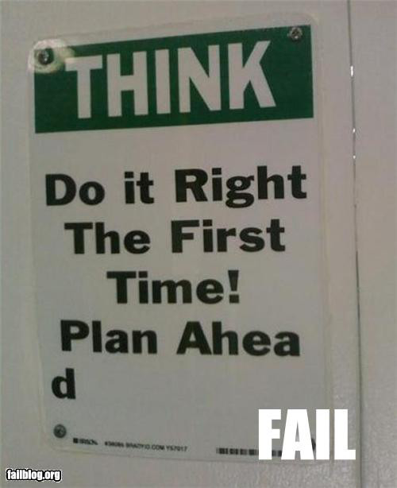
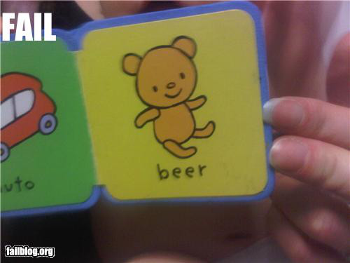

Tweet with this hashtag:
#a11yfu
How to tackle the hot new shit in an accessible way
Eric Eggert
- @yatil
- yatil.net
- outline – we web.
- Essen, Germany
 Drupal
Drupal
- Front- and Backend accessible
- Accessibility Statement
As an inclusive community, we are committed to making sure that Drupal is an accessible tool for building websites and that Drupal helps you create websites that are themselves accessible.
Research your modules wisely.
Who of you could imagine to live without the internet?

52.5%
of people at the age 50+ are using the internet*
92.7%
of people between 14 and 49 are using the internet
Those people will get old!
1 out of 7 people (or 15%)
is permanently disabled*
1 person knows 200 people
We all like to talk about our new car with our friends.
And we like to invite others to watch the big game on our big screen.
And we all use social networks:
- Github
- Calling grandma
Those are real recommendations,
that may convert to sales.
Let’s talk about
web accessibiliy.
Twitterpoll: Finish the sentence honestly: "When I hear the word 'accessibility' I feel ..."
— Molly E. Holzschlag (@mollydotcom) April 11, 2012
@mollydotcom honestly? - Hassled.
— Paul Boag (@boagworld) April 11, 2012
@mollydotcom stressed.
— Gareth Clubb (@digitalclubb) April 11, 2012
'Pressure'- @mollydotcom Twitterpoll: Finish the sentence honestly: "When I hear the word 'accessibility' I feel ..."
— Dennis Deacon (@deconspray) April 11, 2012
@mollydotcom "cringeworthy" lol
— Caroline Murphy (@blueocto) April 11, 2012
@mollydotcom Confused, b/c WordPress free dotcom doesn't tell me how to do that properly.
— Mike Cane (@mikecane) April 11, 2012
@mollydotcom angry about myself and almost everybody actually...
— Alain Couthures (@AlainCouthures) April 11, 2012
@mollydotcom Ashamed.
— Chris Ford (@ctford) April 11, 2012
It’s not that hard!
Basic Accessibility Principles
Perceivable
- Keep things readable
- Don’t differenciate by color
- Contrasts
Operable
- Things have to work without a
pointing devicemouse - Don’t interfere with the default browser behavior
Understandable
- Use consistent navigation
- Structure should enhance the use of the site
- Use simple and plain language
- Clear objectives
Robust
- Allow users to change the content in any way they like it
- Font size
- Device Independence
What about that
hot new shit?
CSS Animation
If extensively used, they could hide content from non-visual users.


Webfonts
Awesome! — But look for legible typefaces!
Beware of JavaScript that alters font rendering,
like typeface.js, fittext.js or kern.js.
Multimedia
I mean <audio> and <video>.
They don’t work with the keyboard!

But it’s easy to provide accessible buttons.


RWD
Responsive Web Design

Never use
text-size-adjust:none;Use
text-size-adjust:100%;instead.
Great for people with vision impairments.
Don’t make too confusing changes to the layout.
vw and vh units
That’s viewport width and height.
HTML5 Semantics
All HTML5 elements are accessible.
<nav> <div>
New elements are not enriched with
additional information*.
* Firefox starts integrating those
WAI-ARIA to the rescue!
<nav role="navigation">

Collaborate!
- Put your stuff on Github!
- Ask questions!
- Follow those people:
- Ask questions!
- Ask questions!
Thank you!
Now grab some…

Twitter me: @yatil ++ #a11yfu